These notes use content from OpenIntro Statistics Slides by
Mine Cetinkaya-Rundel.
These notes use content from OpenIntro Statistics Slides by
Mine Cetinkaya-Rundel.
Regression Analysis concerns the study of relationship between several quantitative variables.
The word “ Regression” was first used by a British scientist Sir Francis Galton when he published his research result (1885) about the heights of sons and the average of their parents. Now the word “Regression” has become synonymous with the statistical study of relation among variables.
For more than one quantitative variables involved in each experiment, we want to determine
Whether the variables are related
How strong the relationships appear to be
If one variable can be predicted from others
In this chapter, we confine to two numerical variables –linear Regression
8.1 Fitting a line, Residuals, and Correlation
8.2 Least Squares Regression
Linear Regression
Prediction
Residuals
Correlation
Linear regression
When the relationship between two quantitative variables is approximately linear, we find a linear model that best describes the relationship. In other words, over the scatter plot of data of two variables, we place a line which has the least square errors.
We use correlation to describe the strength of linear relationship.
For a pair of numerical data, we always first use a scatter plot to see if any association appears.
Example. The cost of share purchase and the number of stocks to purchase of 12 buyers.
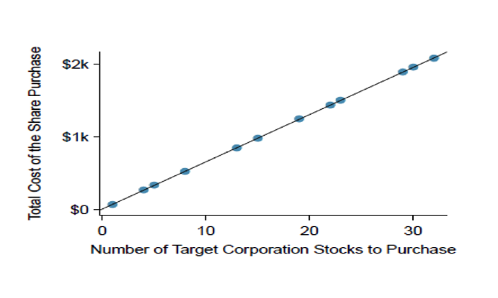
The plot shows a perfect linear fit.
The relation is given by y= 5 + 64.96x
It is rare that all data can fit a perfect line.
Example. The scatterplot below shows the relationship between HS graduate rate in all 50 US states and DC and the percent of residents who live below the poverty line (income below $23,050 for a family of 4 in 2012).
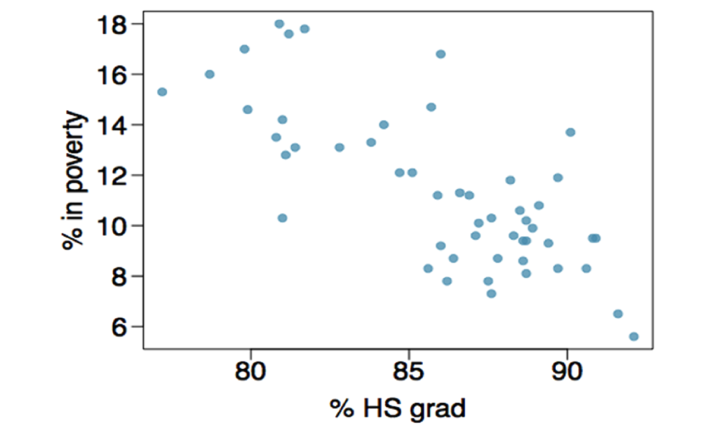
(Review in 2.1)
Response variable
% in poverty
Explanatory variable
% HS grad(Higher education leads to better income)
Relationship
linear, negative, moderately strong
Which of the following appears to be the line that best fits the linear relationship between % in poverty and % HS grad?
Choose one.
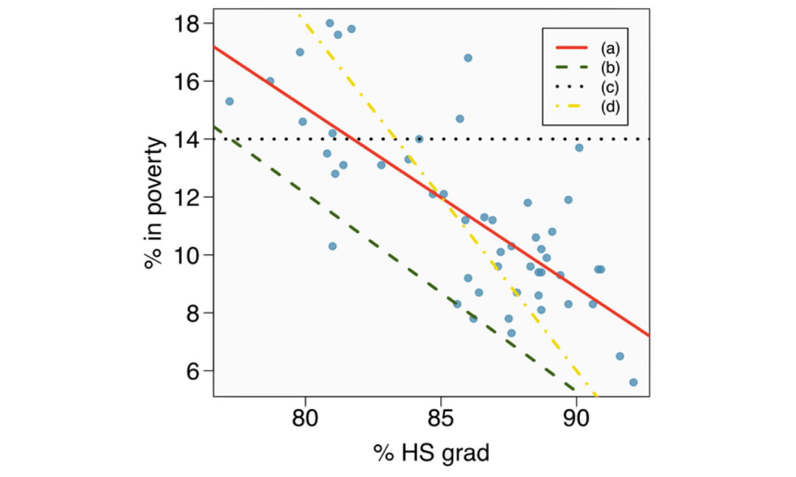
When the relationship of two variables is not fit perfectly with a linear function, we try to use a best linear line with some error to fit the data: \[ y = \beta_{0} + \beta_{1}x + \epsilon\]
where \(\beta_{0}\) and \(\beta_{1}\) are the parameters of the model.
\(\beta_{1}\) is the slope - the change in y for every unit increase in x.
\(\beta_{0}\) is the intercept of the line with the y axis.
\(\epsilon\) represents the error (or residual)
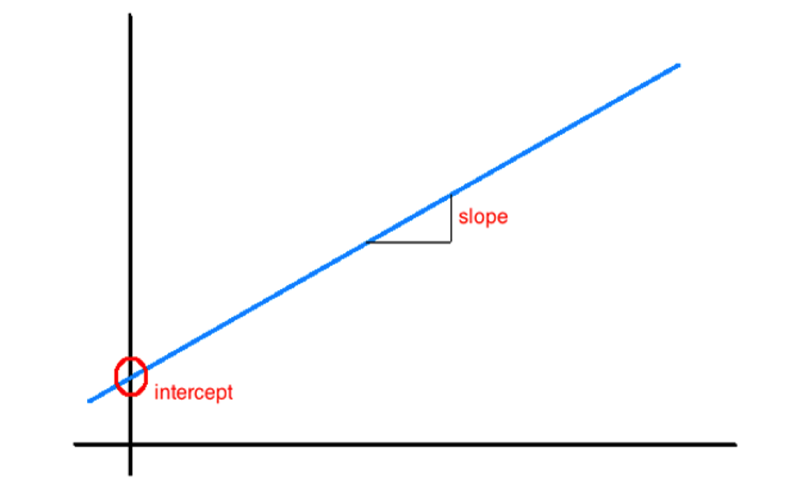
The linear model for predicting poverty from high school graduation rate in the US is
\(\hat{poverty} = 64.78 - 0.62\hspace{0.2cm} HS_{grad}\) (y= a+bx)
The “hat” is used to signify that this is an estimate (using a sample)
Use the model to make prediction: The high school graduate rate in Georgia is 85.1%. What poverty level does the model predict for this state?
\(64.78−0.62×85.1=12.018\)
Predict: the poverty level that the model predicts for the state of Georgia is 12%.
Residuals are the leftovers from the model fit. Data = Fit + Residual
Residual = Data - Fit; \(e_i = y_i - \hat{y}_{i}\)
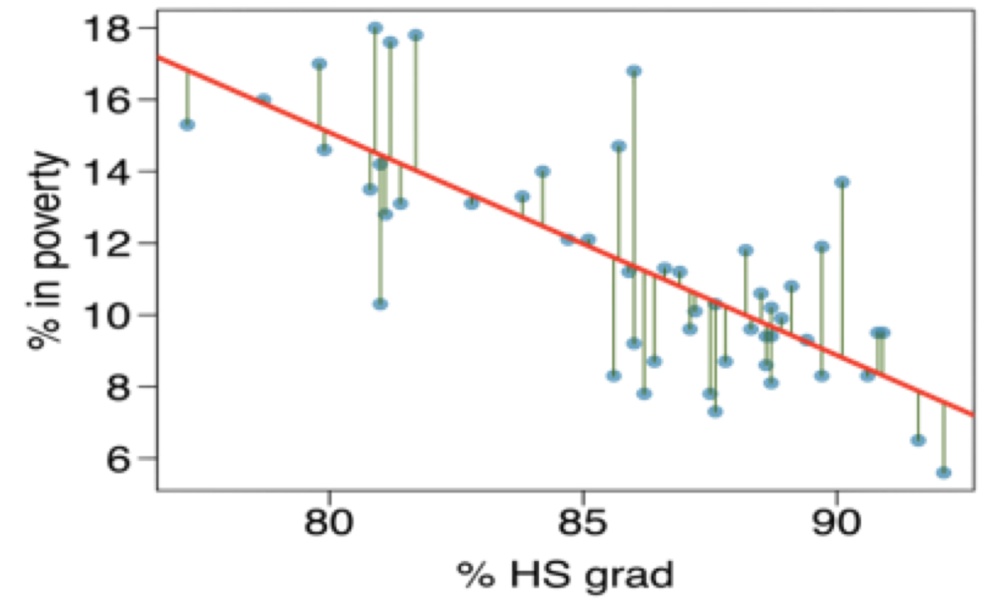
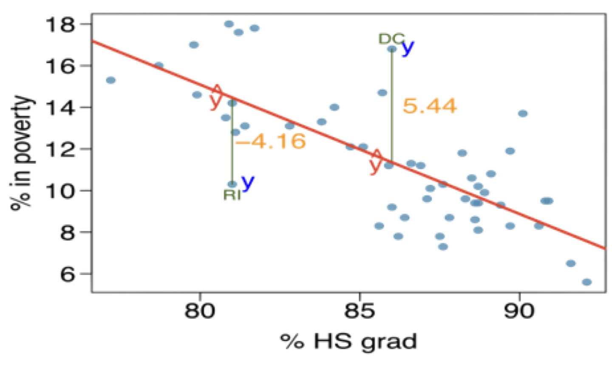
The residual is positive (negative) if the data is above (below) the regression line.
From the right graph on the above right:
\(\%\) living in poverty in DC is 5.44% more than predicted.
\(\%\) living in poverty in RI is 4.16% less than predicted.
Example. For the scatter plot below, the linear fit is given by \(\hat{y} = 41 + 0.59x\), compute the residual of the observation (77.0, 85.3).
Solution
x= 77, \(\hat{y}= 41 + 0.59 \times 77 = 86.43\)
Residual: \(e= y-\hat{y}= 85.3 - 86.43 =-1.13\)
(One step: \(e= y-\hat{y} = 85.3 -(41+0.59 \times 77))\)
Practice: compute the residual of the observations
+(85.0, 98.6),
∆ (95.5, 94)
Check answers:
7.45 (for +)
−3.3 (for ∆)
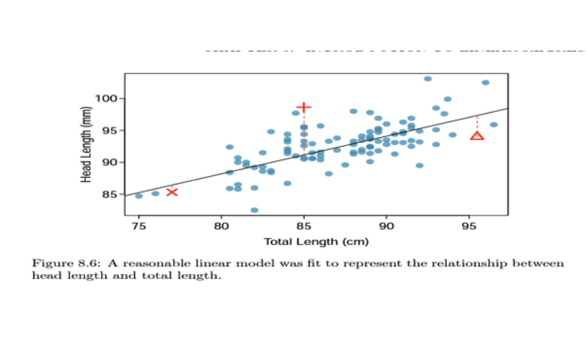
Example. (compare plots)
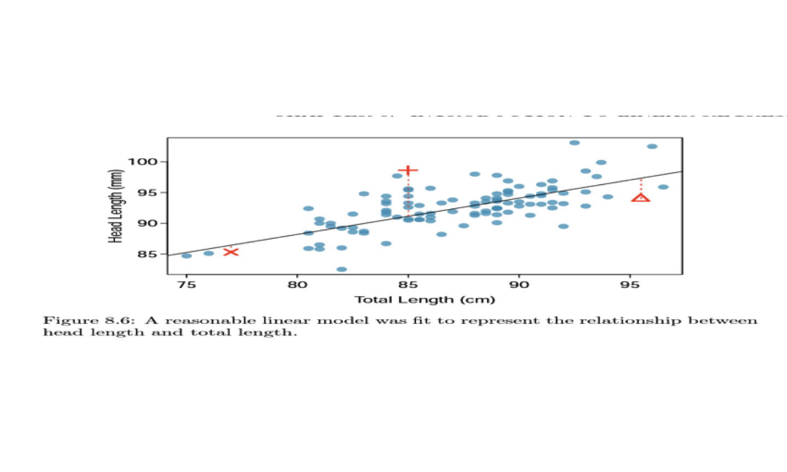
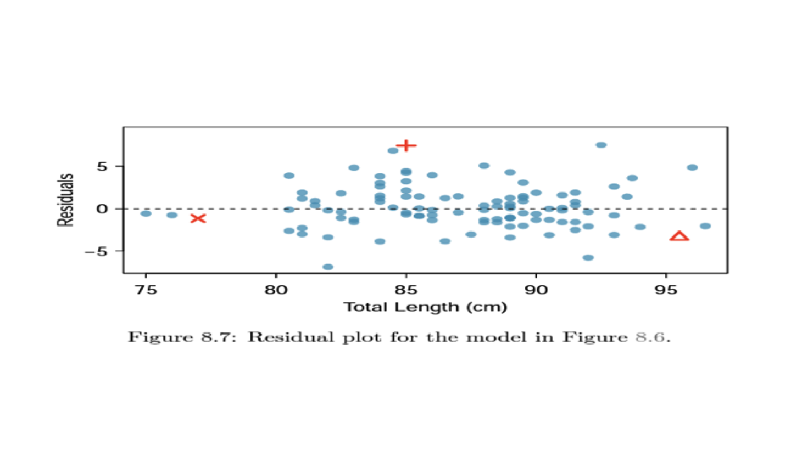
\[R= \frac{1}{n-1}\sum_{i=1}^{n} \frac{(x_i -\bar{x})(y_i - \bar{y})}{S_x S_y}\] Where \(\bar{x}\), \(\bar{y}\), and \(s_x\),\(s_y\) are means and standard deviations for each variables.
Example : \(R^2\) = 0.60, 60% of data is predictable by the regression model.
In the following R code, we use the cor() command to calculate the Pearson correlation coefficient (R) between the % HS Grad and % Poverty in the states. Note that the coefficient of determination is obtained by squaring R.
Poverty = c(14.6, 8.3, 13.3, 18.0, 12.8, 9.4, 7.8, 8.1, 16.8, 12.1, 12.1, 10.6,
11.8, 11.2, 8.7 , 8.3, 9.4, 13.1, 17.0, 11.3, 7.3, 9.6, 10.3,6.5, 17.6,
9.6, 13.7, 9.5, 8.3, 5.6, 7.8, 17.8, 14.0, 13.1, 11.9, 10.1, 14.7,
11.2 ,9.2 ,10.3,13.5, 10.2 ,14.2, 15.3, 9.3, 9.9,8.7 ,10.8, 16.0, 8.6 , 9.5)
Graduates = c(79.9,90.6 ,83.8, 80.9, 81.1,88.7, 87.5, 88.7, 86.0, 84.7,85.1,88.5, 88.2,
85.9, 86.4, 89.7, 88.6, 82.8, 79.8,86.6, 87.6,87.1,87.6,91.6,
81.2, 88.3,90.1, 90.8, 85.6, 92.1, 86.2, 81.7, 84.2, 81.4, 89.7, 87.2, 85.7,
86.9, 86.0, 81.0, 80.8 ,88.7 ,81.0 ,77.2, 89.4, 88.9,87.8 ,89.1, 78.7,88.6, 90.9)
##Correlation Coefficient
R = cor(Graduates, Poverty, method = "pearson")
R
## Coefficient of Determination R2
R2 = R^2
R2
Remember −1 ≤𝑅≤ 1
If 𝑅 is near 1, it means strong positive linear association
If 𝑅 is near −1, it means strong negative linear association
Some sample scatter plots and their correlations
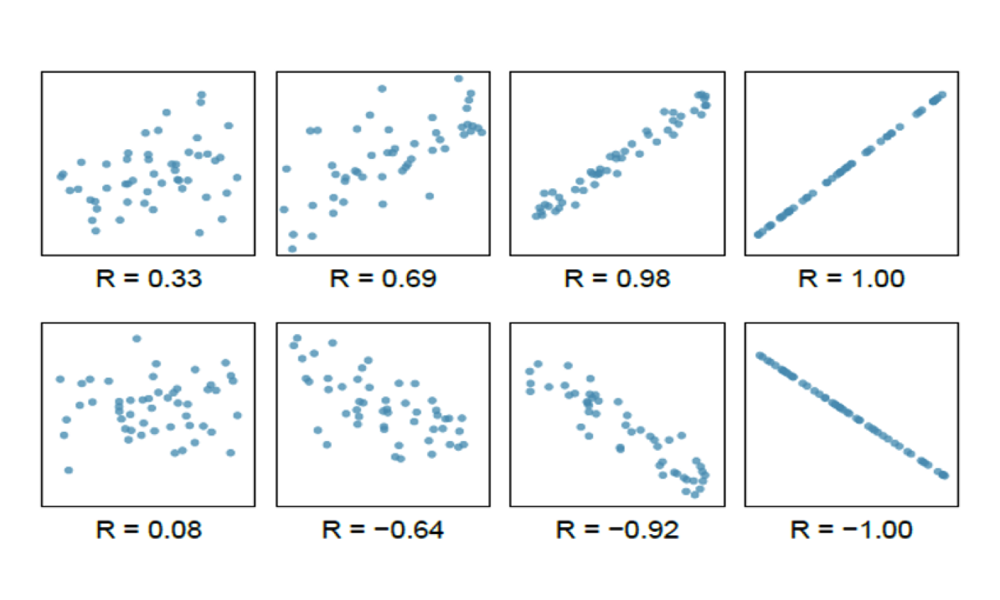
Which of the following is the best guess for the correlation between percent in poverty and percent HS grad?
-0.75
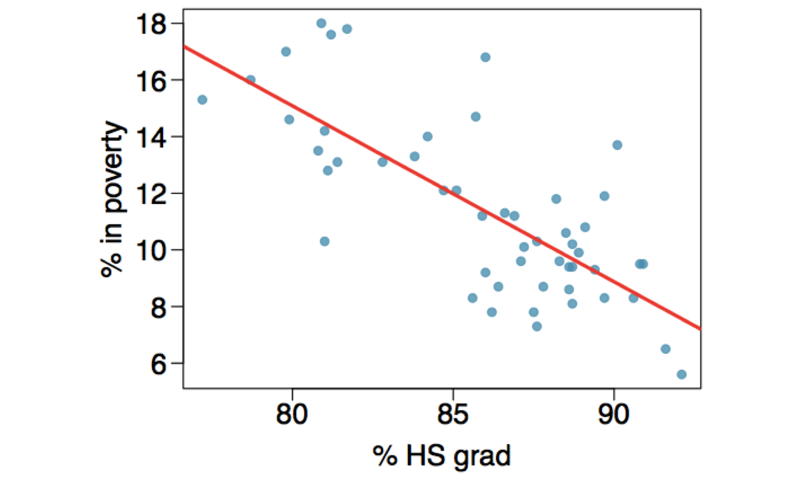
Which of the following is the best guess for the correlation between percent in poverty and percent female householder?
0.5
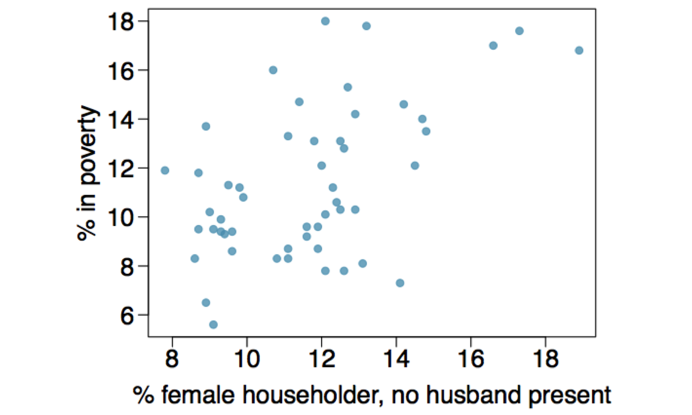
Weak Positive Correlation: \(R\) is between 0.1 and 0.3 means that the existing relationship is weak.
Moderate Positive Correlation: \(R\) is between 0.3 and 0.7 means that the relationship is moderate.
Strong Positive Correlation: \(R\) is between 0.7 and 0.9 means that the relationship is strong.
Different standard: 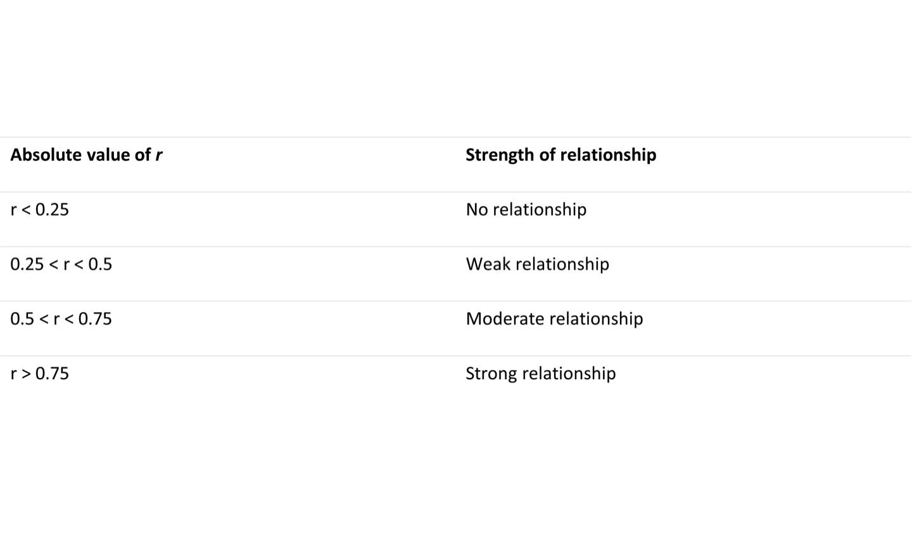
Which of the following is has the strongest correlation, i.e. correlation coefficient closest to +1 or -1?
(b) → correlation measures the strength of linear association
The correlation is intended to quantify the strength of a linear trend.
For nonlinear trends, correlations may not reflect the strength of the relationship.
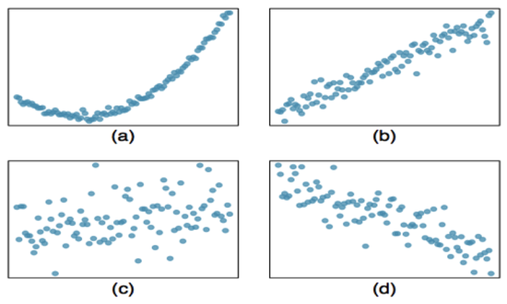
The plots below show strong nonlinear association but weak correlation.